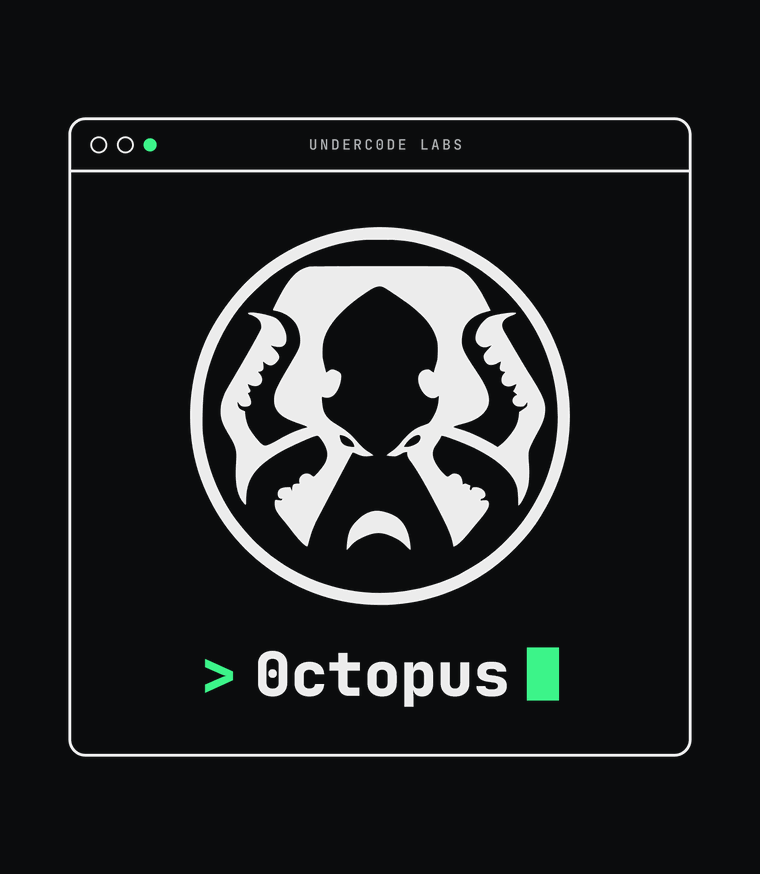

Documentación de 0ctopus
Navaja suiza de pentesting de Underc0de — CLI + reportes HTML + 307 agentes de seguridad. Toda la documentación en una sola página.
Instalación
Requisitos
- Python 3.10+ (probado en 3.14).
pipy, recomendado, un entorno virtual.- Windows: para captura de paquetes /
arp-scan/ WiFi, instalar Npcap en modo *"WinPcap Compatible"* y ejecutar la terminal como Administrador. - Opcional:
hashcat(parawifi-crack),nmap(algunos flujos), adaptador WiFi con modo monitor (para WiFi).
Pasos
# 1) Clonar
git clone https://github.com/underc0delabs/0ctopus.git
cd 0ctopus
# 2) Entorno virtual (recomendado)
python -m venv env
source env/bin/activate # Linux/macOS
env\Scripts\activate # Windows
# 3) Dependencias
pip install -r requirements.txtDependencias principales
requests, urllib3, certifi, scapy, dnspython, python-nmap, click, colorama, pyfiglet, beautifulsoup4, python-whois, pywifi, comtypes, pyhashcat.
El archivorequirements.txtestá en UTF-8 y con versiones fijadas. Sipipfalla, verificá que tu Python sea 3.10+.
Verificación
python 0ctopus.py --help
python 0ctopus.py hash-identify 5f4dcc3b5aa765d61d8327deb882cf99Si ves el banner y la ayuda de comandos, está listo. Los reportes se generan en output/.
Uso con Claude Code (capa agéntica)
La carpeta .claude/ trae agentes y skills. Abrí el proyecto con Claude Code y pedí, por ejemplo, *"auditá la seguridad de underc0de.org"*. Ver agents.md.
Uso
Menú interactivo
Sin argumentos, 0ctopus muestra un menú:
python 0ctopus.pyComandos directos
python 0ctopus.py <comando> [opciones]Muchos comandos aceptan el objetivo por argumento; si se omite, usan config.py.
Reconocimiento
python 0ctopus.py enum-subdomains --domain ejemplo.com
python 0ctopus.py dns-recon ejemplo.com
python 0ctopus.py whois ejemplo.com
python 0ctopus.py wayback-urls ejemplo.com --limit 500
python 0ctopus.py geoip 1.2.3.4Web
python 0ctopus.py header-analyzer https://ejemplo.com
python 0ctopus.py vuln-check --url https://ejemplo.com
python 0ctopus.py dirb --url https://ejemplo.com --max-depth 3 --verbose
python 0ctopus.py find-admin https://ejemplo.comRed
python 0ctopus.py scan-ports --host ejemplo.com
python 0ctopus.py arp-scan --network 192.168.1.0/24 # requiere privilegios
python 0ctopus.py sniff-packets --timeout 20 # requiere privilegiosWireless / hashes
python 0ctopus.py wifi-scan # interactivo, requiere hardware
python 0ctopus.py wifi-handshake # interactivo, requiere modo monitor
python 0ctopus.py wifi-crack # interactivo, requiere hashcat
python 0ctopus.py hash-identify '$2b$12$...'Reportes
python 0ctopus.py report-build output/engagement.json # reporte consolidado
python 0ctopus.py rebuild-index # regenera el dashboardSalida
Todo se guarda en output/:
output/index.html— dashboard (abrir en el navegador).output/reports/*.html— un reporte HTML por ejecución.- Archivos
.txt/.json/.pcapsegún la herramienta.
Ver reporting.md para el detalle de los reportes.
Herramientas
Cada herramienta vive en tools/<nombre>.py, expone un comando click y genera un reporte HTML en output/reports/.
| Comando | Descripción | Objetivo |
|---|---|---|
scan-ports | Escaneo de puertos comunes con detección de servicio/versión | --host |
vuln-check | Chequeo de vulnerabilidades (TLS, cabeceras, archivos sensibles, WordPress, CVEs) | --url |
enum-subdomains | Subdominios vía crt.sh + wordlist + DNS | --domain |
dirb | Crawling de directorios internos | --url, --max-depth, --verbose |
sniff-packets | Captura de paquetes a .pcap | --interface, --count, --timeout |
dns-recon | Registros A/AAAA/MX/NS/TXT/CNAME/SOA | <dominio> |
whois | Datos WHOIS del dominio | <dominio> |
geoip | Geolocalización de IP | <ip> |
wayback-urls | URLs históricas (Wayback Machine) | <dominio>, --limit |
header-analyzer | Auditoría de cabeceras de seguridad HTTP | <url> |
find-admin | Búsqueda de paneles de administración | <url>, -w, -t |
hash-identify | Identifica el tipo probable de un hash | <hash> |
arp-scan | Descubre hosts en la LAN (ARP) | --network, --timeout |
wifi-scan | Escanea redes WiFi cercanas | *(interactivo)* |
wifi-handshake | Captura handshake WPA/WPA2 | *(interactivo)* |
wifi-crack | Crackea handshake con hashcat | *(interactivo)* |
report-build | Reporte HTML consolidado desde JSON | <json> |
rebuild-index | Regenera el dashboard | — |
Notas por categoría
- Red (
scan-ports,arp-scan,sniff-packets):arp-scanysniff-packetsrequieren privilegios (admin/root) y, en Windows, Npcap. - Wireless (
wifi-*): requieren hardware compatible y son interactivas. - Recon (
dns-recon,whois,wayback-urls,geoip,enum-subdomains): rápidas y poco intrusivas; ideales para mapear la superficie. - Web (
vuln-check,header-analyzer,dirb,find-admin):dirb/find-admingeneran tráfico notable; ajustá parámetros y confirmá autorización.
Añadir una herramienta nueva
- Creá
tools/mi_tool.pycon un comando@click.command(name='mi-tool')(cmd_*). - Al final, generá el reporte:
from tools import report; report.save(tool='mi-tool', title=..., target=..., sections=[...], stats=[...]). - Registrala en
0ctopus.py(from tools.mi_tool import cmd_mi_tool+cli.add_command(...)) y agregala al menú.
Reportes
0ctopus genera reportes con el estilo "acid lab" de Underc0de: fondo negro con grilla y scanlines CRT, glow neón celeste, tipografía Pixelify Sans (HUD) + monospace, cabecera tipo terminal y badges de severidad con glow.
Estructura
output/
├── index.html ← Dashboard (abrir en el navegador)
├── reports.json ← Manifiesto de todos los reportes
└── reports/
├── scan-ports-ejemplo.com-20260101_120000.html
├── vuln-check-ejemplo.com-20260101_120500.html
└── ...- Dashboard (
index.html): métricas globales (total de reportes, herramientas usadas, objetivo principal, último escaneo), buscador en vivo, filtros por herramienta y listado enlazado. - Reporte individual: tarjetas de métricas, tablas con estados coloreados, datos clave-valor, listas y salida en crudo tipo terminal.
Motor (tools/report.py)
from tools import report
report.save(
tool='scan-ports',
title='Escaneo de puertos',
target='ejemplo.com',
stats=[report.stat('Abiertos', 5, 'ok'), report.stat('Filtrados', 2, 'warn')],
sections=[report.table('Puertos', ['Puerto','Estado','Servicio'], filas, status_col=1)],
raw='salida opcional en crudo',
)Helpers de sección: table(title, headers, rows, status_col), keyvalue(title, data), listing(title, items), text(title, body), y stat(label, value, accent) con accent ∈ ok|warn|bad|info|muted.
Reporte consolidado (uso agéntico)
El agente report-writer escribe un JSON y lo convierte en HTML:
python 0ctopus.py report-build output/engagement.jsonEsquema del JSON:
{
"tool": "engagement",
"title": "Reporte consolidado — ejemplo.com",
"target": "ejemplo.com",
"stats": [{"label": "Riesgo global", "value": "MEDIO", "accent": "warn"}],
"sections": [
{"type": "text", "title": "Resumen ejecutivo", "body": "..."},
{"type": "table", "title": "Hallazgos", "headers": ["Severidad","Hallazgo","Recomendación"],
"rows": [["Alta", "...", "..."]], "status_col": 0}
]
}El status_col colorea según palabras clave: *alta/vulnerable/ausente* → rojo, *media/filtrado* → amarillo, *baja/ok/presente* → verde.
output/está en.gitignore: los reportes son artefactos de ejecución y no se versionan.
Agentes

0ctopus incluye una capa de agentes y skills para Claude Code (.claude/) que permite orquestar evaluaciones completas con lenguaje natural.
Roles
- Orquestador —
pentest-orchestrator: planifica la evaluación, confirma alcance/autorización y delega en los especialistas; al final invoca al redactor. - Especialistas base (usan la CLI de 0ctopus):
recon-specialist,web-specialist,network-specialist,wireless-specialist. - 300+ especialistas avanzados por dominio (ver catálogo completo en
../.claude/agents/README.md). - Redactor —
report-writer: consolida los hallazgos en reportes HTML dentro deoutput/.
Dominios cubiertos
Web/API · Autenticación/Identidad · Mobile (Android/iOS/RN/Flutter) · Streaming/Medios (DRM, HLS/DASH, RTMP) · Cloud/Contenedores (AWS/Azure/GCP, K8s, Docker, IaC) · DevSecOps/CI-CD · Red/Infra · Active Directory/Windows/Linux/macOS · Wireless/RF/IoT/Hardware (WiFi, BLE, Zigbee, LoRa, UART/JTAG/SPI) · ICS/SCADA/OT (Modbus, DNP3, BACnet, OPC-UA) · Médico (DICOM/HL7-FHIR) · Automotriz (CAN/OBD-II) · Avionica/Marítimo (ADS-B/AIS) · Blockchain/Web3 · IA/ML/LLM · Bases de datos · Mensajería/Colas · VoIP/Telecom · Periféricos · Vigilancia/CCTV · Gaming/VR · Wearables/Smart Home · Fintech/POS · Forense/DFIR · Threat Intel/OSINT · Red Team · Compliance/Gobierno · Cripto · Secure Code/SAST.
Skills
En .claude/skills/ hay skills de dominio (metodología + uso de tools): recon, web-audit, network-scan, wifi-audit, mobile-audit, cloud-audit, streaming-audit, reporting, y una skill por cada familia avanzada (iot-hardware, ics-ot, automotive-security, blockchain-web3, ai-llm-security, forensics-dfir, red-team, compliance-governance, etc.).
Uso típico
*"Auditá la seguridad de underc0de.org"*
El orquestador: (1) confirma alcance → (2) recon → (3) web/red en paralelo → (4) report-writer consolida → (5) abrís output/index.html.
Autorización
Todos los agentes trabajan solo sobre objetivos autorizados. Las técnicas intrusivas requieren permiso explícito. Ver security.md y CLAUDE.md.
Arquitectura
Componentes
0ctopus/
├── 0ctopus.py # CLI principal (click) + menú interactivo
├── config.py # HOST / URL_BASE por defecto
├── requirements.txt
├── tools/ # Herramientas (una por archivo)
│ ├── report.py # Motor de reportes HTML + dashboard
│ ├── portscanner.py, vuln_check.py, dirb.py, subdomain_enum.py,
│ ├── packet_sniffer.py, dns_recon.py, whois_lookup.py, ip_geolocator.py,
│ ├── wayback_urls.py, header_analyzer.py, admin_finder.py, hash_identify.py,
│ ├── arp_scan.py, wifi_scanner.py, wifi_handshake.py, handshake_crack.py
├── .claude/
│ ├── agents/ # Orquestador + 300+ subagentes + catálogo
│ └── skills/ # Skills de dominio
├── docs/ # Esta documentación (md, web, imágenes, PDF)
└── output/ # Reportes generados (gitignored)Flujo de una herramienta
- El comando
clicken0ctopus.py(o el módulo) recibe el objetivo. - Llama a la función de la herramienta en
tools/. - Guarda la salida clásica (TXT/JSON/PCAP) en
output/. - Llama a
report.save(...)→ genera el HTML del reporte, actualizareports.jsony regeneraindex.html.
Flujo agéntico
pentest-orchestratorplanifica y delega (toolAgent) en especialistas.- Cada especialista ejecuta tools de 0ctopus (vía
Bash) y/o metodología de suSkill. - Los reportes individuales caen en
output/reports/. report-writerconsolida todo en un reporteengagementconreport-build.
Principios de diseño
- Una herramienta = un archivo en
tools/, con comandoclicky reporte HTML. - Salida unificada en
output/(gitignored). - Objetivo configurable por
config.pyo por argumento. - Agentes self-contained con guard de autorización y referencia a su skill.
Seguridad
0ctopus es una herramienta de seguridad ofensiva. Su objetivo es el pentesting autorizado, los CTF, la investigación y la defensa.
Reglas de alcance y autorización
- Solo objetivos autorizados. Usá 0ctopus únicamente contra sistemas, redes y aplicaciones propios o para los que tengas autorización explícita por escrito.
- Objetivo por defecto.
config.pyapunta aunderc0de.org(infraestructura de la comunidad). Cambialo solo por objetivos dentro de tu alcance. - Técnicas intrusivas (fuerza bruta, captura de handshakes, cracking, exfiltración, fault injection, etc.) requieren permiso expreso y, a menudo, un entorno de laboratorio.
- Dominios sensibles (médico, automotriz, ICS/OT, aviación, RF/telecom): priorizá recepción pasiva y detección; muchas pruebas activas solo son legales en laboratorio y con autorización.
- Ante la duda, frená y preguntá. Si un objetivo parece de un tercero sin autorización, no ejecutes nada.
Marco legal
El acceso no autorizado a sistemas informáticos, la interceptación de comunicaciones ajenas y la ruptura de protecciones de contenido son ilegales en la mayoría de las jurisdicciones. El uso indebido de 0ctopus es responsabilidad exclusiva de quien lo ejecuta.
Uso defensivo
Muchos agentes tienen enfoque defensivo/detección (DFIR, threat hunting, detección de EDR, hardening, compliance). Úsalos para mejorar la postura de seguridad de tus propios sistemas.
Reporte de vulnerabilidades
Si encontrás una vulnerabilidad en 0ctopus, reportala de forma responsable a la comunidad Underc0de: https://underc0de.org
FAQ
¿Qué es 0ctopus?
Una navaja suiza de pentesting de Underc0de: CLI en Python + reportes HTML + capa agéntica (300+ agentes) para Claude.
¿Necesito Claude para usarlo?
No. La CLI funciona sola (python 0ctopus.py ...). La capa agéntica .claude/ es un extra para orquestar evaluaciones con Claude Code.
¿Dónde quedan los resultados?
En output/: un dashboard index.html y un HTML por reporte en reports/, más archivos TXT/JSON/PCAP. Está en .gitignore.
¿Puedo apuntar a cualquier dominio?
Solo a objetivos autorizados. Ver security.md. El objetivo por defecto es el de config.py.
pip install -r requirements.txt falla
Verificá Python 3.10+ y que el archivo esté en UTF-8 (lo está). En Windows, algunas libs de red necesitan Npcap.
arp-scan / sniff-packets / wifi-* no funcionan
Requieren privilegios (admin/root) y, en Windows, Npcap (modo WinPcap). Las de WiFi además necesitan hardware con modo monitor y son interactivas.
Veo errores de emojis en la consola (Windows)
La consola clásica cmd.exe usa cp1252. Usá Windows Terminal (UTF-8) o establecé PYTHONIOENCODING=utf-8.
¿Cómo agrego una herramienta o un agente?
Herramienta: ver tools.md. Agente: creá un .md en .claude/agents/ con frontmatter name/description/tools/model y su metodología.
¿Cómo genero un reporte consolidado?
python 0ctopus.py report-build output/engagement.json (ver reporting.md). O dejá que el agente report-writer lo haga.
¿Hay documentación offline / para imprimir?
Sí: 0ctopus-cheatsheet.pdf en esta carpeta, y el portal index.html.